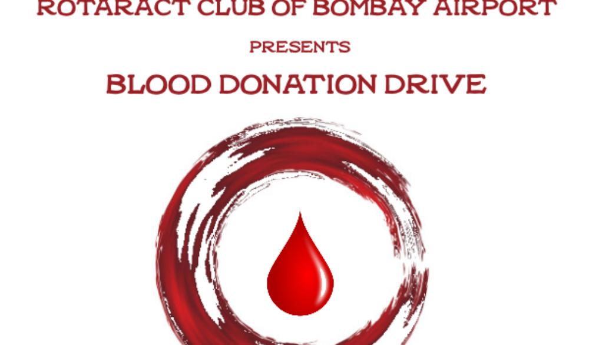

It's going to be the one of the most hygienic, well-organized Blood Donation Camp supported by the Best Blood Banks and Hospitals in Mumbai. One painless prick will save a life! 900 bottles of blood are required in the city of Mumbai every single day. Every healthy person should donate blood, nature replaces your body with a fresh pint of blood. Get your Blood Recycled. Be a RAQT Donor. SAVE THE DATE Sunday, 14th January 2021, 8 am to 8 pm Bhatiawadi Banquet Hall, Ghatkopar
The drive in the Deutsche Bank office saw 300 units of blood collected. In fact, the response was so unexpected, that the camp ran out of blood bags and had to regretfully turn down a number of volunteer donors.